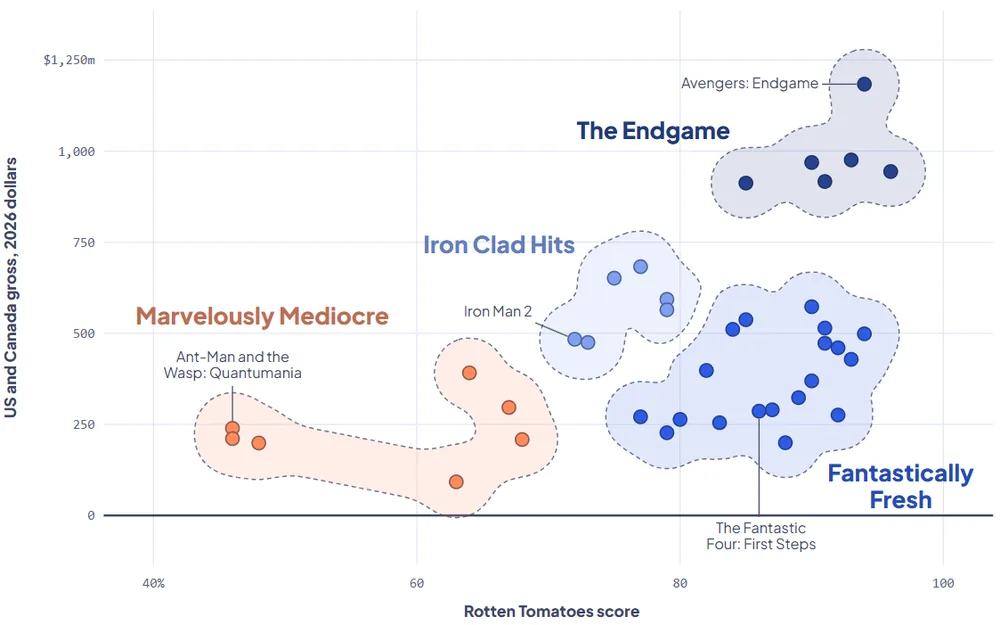

The four kinds of Marvel movie
All 38 Marvel Cinematic Universe films by critic score and inflation-adjusted US and Canada gross, sorted into four groups with k-means.
Open the chart →Chart examples
Finished charts that go beyond the sample dashboards in my component library. Each one starts from a library component and adds real data and its own story.